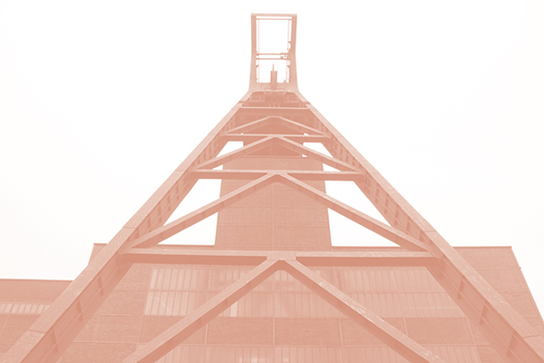

Veel mensen kennen het Ruhrgebied als een groot industriegebied met veel snelwegen onderweg naar wintersport. Wat meeste mensen nog niet weten is dat het Ruhrgebied veel meer te bieden heeft! Het was de culturele hoofdstad in 2010, zit tjokvol met industrieel erfgoed en bestaat inmiddels grotendeels uit natuur.

Culturele hoofdstad van Europa 2010
Ingeschreven als Essen 2010 en uitgevoerd als Ruhr2010 is dit de eerste culturele hoofdstad van Europa die niet daadwerkelijk een stad is. Deze regio heeft, door de stugge volharding om van kolen cultuur te maken, de prestigieuze titel Culturele Hoofdstad van Europa gekregen. Doorspekt met kunst, industrieel (wereld)erfgoed en entertainment is de Ruhr getransformeerd van zware industrie tot een metropool met meer dan vijf miljoen inwoners. Sterker nog, in het metropoolgebied Rhein-Ruhr (waar het Ruhrgebied onderdeel van is) wonen meer dan tien miljoen mensen!
Duitse Adel & Industrieel erfgoed
Tot ver in de geschiedenis van het Ruhrgebied is hier al adel aanwezig. Door de opkomst van de industrie groeide dit snel, samen met de industrie. Heel de omgeving staat nog vol met indrukwekkende overblijfselen van een inmiddels vervlogen tijd die zo kenmerkend was voor dit gebied. Je gaat hier veel verschillende kanten van zien. Van de forten van Duitse adel uit de middeleeuwen, tot de Zechen en cokesfabrieken.
Wonderschone natuur
Het Ruhrgebied ontleent zijn naam aan de rivier die er dwars doorheen loopt, de Ruhr. Ondanks alle industrie die nog in deze omgeving staat zijn er nog meer dan genoeg plekken waar jullie in alle rust van de schitterende natuur kunnen genieten. Tijdens dit spel ga je ontdekken waar dat is en ben je er zeker even stil van.